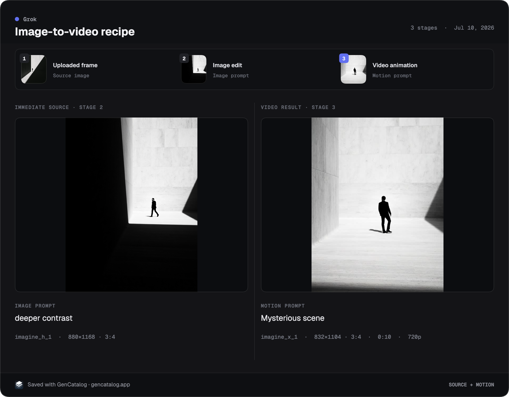

Files drift away from their prompts.
Downloads pile up while the model, settings, source, and reason they mattered disappear.
GenCatalog: the full recipe stays attached when the creation site provides it.
Prompts disappear. Favorites become cluttered. Downloads pile up in random folders. GenCatalog turns AI images and videos into a searchable local library, with prompts and metadata preserved.
7-day trial Up to 250 saves Local by default

“Pays for itself in the first day.”
The archive layer
Generation platforms help you create. GenCatalog helps you remember—without moving your work into another cloud or asking you to rebuild the context by hand.
Downloads pile up while the model, settings, source, and reason they mattered disappear.
GenCatalog: the full recipe stays attached when the creation site provides it.
A long feed can hold thousands of images and still make the exact one impossible to retrieve.
GenCatalog: one local library brings supported saves into a searchable catalog you control.
Filenames do not know the prompt, source, account, tags, notes, rating, or workflow behind a result.
GenCatalog: search by prompt, platform, tags, media type, dates, notes, and account.
Save → Find → Reuse
Capture where you create. Search by the context you remember. Reuse the full recipe when the work becomes useful again.
On supported creation sites, one click captures the image or video with the prompt, settings, metadata, and source link when the site provides them.
Search thousands of generations by prompt text, tags, models, platforms, filenames, notes, and creator or account fields.
Prompt, model, version, parameters, dimensions, seed, and source context stay attached as one reusable record.

One click turns a saved image or video frame into a clean card with the prompt and settings beside it.

Import image and video folders from your Mac or Windows PC. GenCatalog reads embedded ComfyUI prompts, checkpoints, seeds, CFG, samplers, schedulers, denoise values, dimensions, and LoRAs when present.

Pin two generations next to each other. Compare prompts, models, seeds, settings, notes, and source context without switching windows.

See what is cached, saved, new, or deleted, then scan months of supported platform history in one pass.

Hit Rediscover and a handful of random older generations come back into view. No algorithm and no rankings—just a way to wander your own library again.
Local by design
No account. No cloud uploads. No subscription holding your work hostage. GenCatalog stores your images, videos, prompts, and metadata in a folder you choose, using an open file format you can keep.
We never see your private library information. Anonymous product analytics never include your media, prompts, filenames, file paths, URLs, tags, notes, collections, account information, license information, or a persistent device identifier. Fresh installations show a clear notice before anything is recorded and let you turn analytics off immediately or anytime in Settings.
“Perfect tool for locally saving and managing work from Grok. I had 12,000+ files to manage and this tool was a godsend.”
“GenCatalog has completely changed how I organize and browse my MidJourney library. I’ve already rediscovered so many great images I had forgotten about.”
“I put it in the must have category—especially if you’re working across multiple platforms and wanting to bring all that content together in one place.”
“Amazing app, saves me days of importing a tonne of generations and their metadata.”
“This tool is indispensable if you’re serious about using any of these GenAI tools for work.”
One price
Buy it once. Use it forever. No subscription, seats, or renewal.
Keep what you make
Free for 7 days or 250 saves. Then $79 once. Your local library remains on your computer.